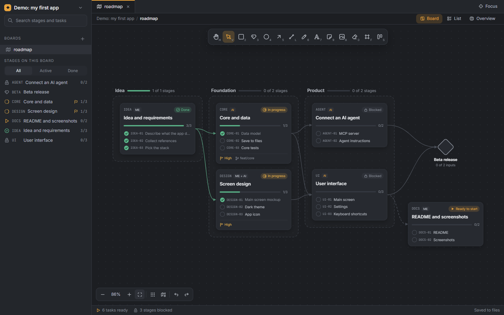
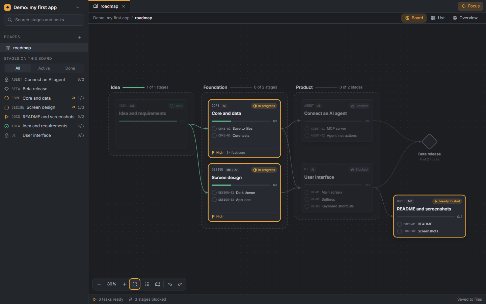
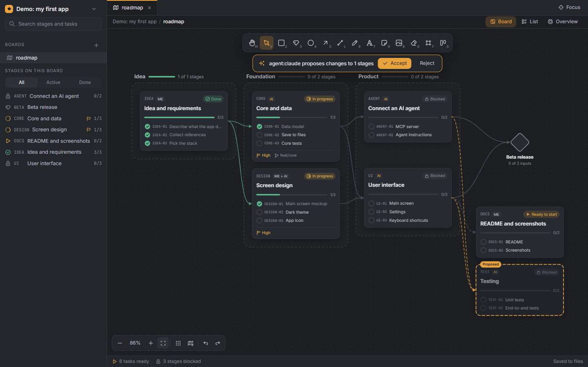
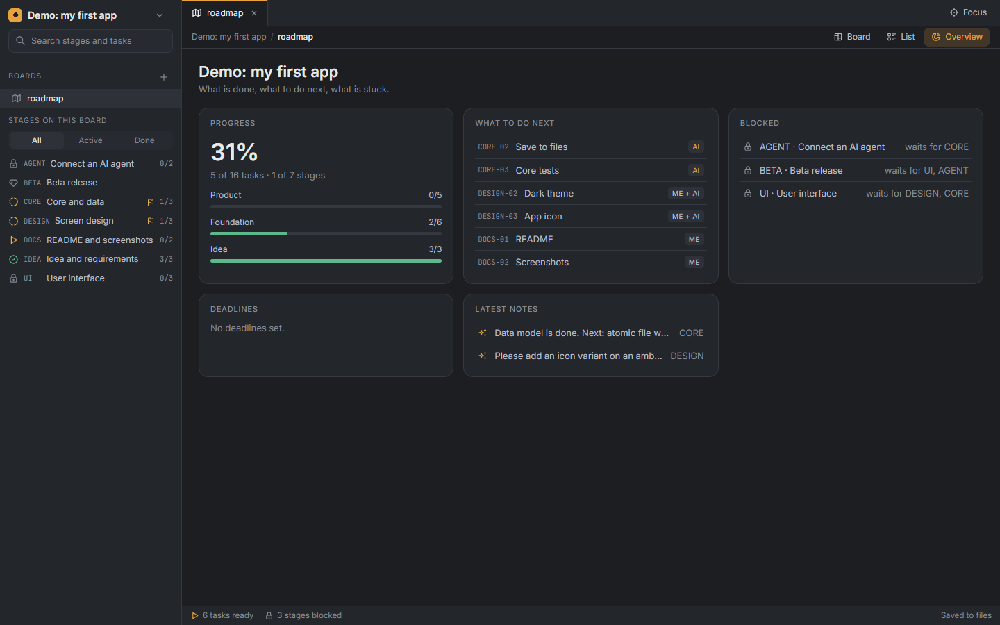

The plan your AI agents keep up to date
Pathloom is a local whiteboard and roadmap. Your agent builds the plan through MCP or the CLI. You watch the board change live, then approve or revert.
v0.1.0 pre-release · Windows · macOS · Linux
From a prompt to a plan you can see
The agent does the typing. You keep the overview and the last word.
One board for the picture and the plan
Draw freely, then turn the sketch into stages with real dependencies.
An infinite whiteboard that knows your plan
Sketch the way you think, and put real stage cards on the same canvas.
- Shapes, arrows that stick to cards, pencil, sticky notes, images and frames.
- Clean or hand-drawn style, snap to grid, smart guides, minimap.
- Focus mode hides finished work and highlights what you can do now.

Stage cards with real dependencies
Every stage has tasks with IDs like AUTH-03. Status is computed from the graph, never typed in.
- Ready, in progress, blocked or done, worked out from dependencies and tasks.
- Hard and soft dependencies, with cycle protection.
- Phases with progress, milestones and plan templates.
- Auto-arrange keeps the board tidy after every agent change.

Agents propose, you decide
In review mode an agent’s changes arrive as dashed cards with a diff. Nothing lands until you say so.
- Approve or reject each proposal, with a reason the agent can read.
- One-click undo of anything an agent changed.
- Claims show which agent works on which task, live.
- Orchestrator protocol: session state, a shared approval queue, an events stream and
pathloom://deep links.

Everything that needs you, in one place
Agents can ask you to approve a task or to choose between options. All of it collects in Waiting for me.
- Answer in the app, or from Telegram with
pathloom telegram. - Optionally, agents cannot close tasks and must send them to review.
- Decisions are recorded, so an agent does not ask twice.
What to do today, and what is on the critical path
Overview, Today and Week views show what is overdue, due and blocked, so you open the app and know.
- Quick add in plain words: type “fix login bug friday” and it becomes a task.
- Reminders and a daily digest.
- Timeline with the critical path highlighted.

Bring your plan in, take it out, undo anything
Your plan is never locked in. Every change is logged and can be reverted.
- Import from Markdown, CSV, Trello or Notion.
- Export to a read-only HTML page, Markdown, CSV or GitHub issues.
- Change history with one-click revert.
Built for agents, readable by you
Every action in the app is also a command. The same plan is available through the CLI and a stdio MCP server.
Works with
Download Pathloom
A desktop app for Windows, macOS and Linux. No account, no cloud: everything stays in your project folder.
v0.1.0 pre-release. This is an early release. Builds are not code-signed yet, so your system may ask you to confirm the first launch. All releases.